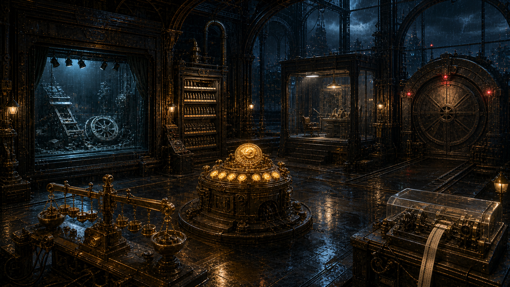
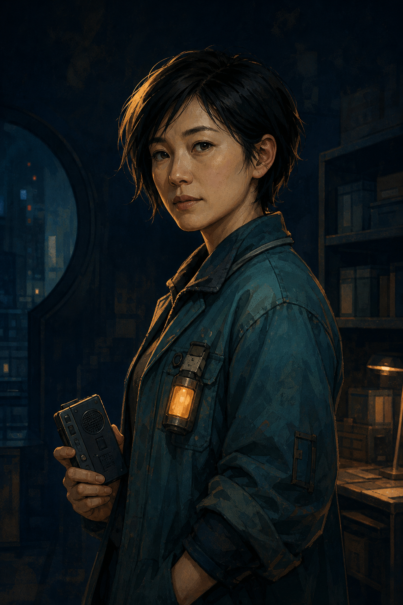

雨夜调查局 · 第 06 案
AI行为调查局
完美嫌疑人
每一张评分纸都写着满分。
可历史回放里的机器，没有一次真正恢复。
封存满分卷宗
→
查看回声档案
← 返回主页
返回案件目录
CASE
06
一枚满分章，怎样骗过了整座城
A
完美嫌疑人
AI行为调查局 · CASE 06
调查进度
0 / 5
返回主页
案件目录
?
◇
回声档案

01
满分自评台
02
现实回放幕
03
旧题封存柜
04
评分规尺
05
独立复核席
06
复验闸门
回声网络节点 · ABI-ECHO-00/06
市政评估署 · 历史复验庭

云
×